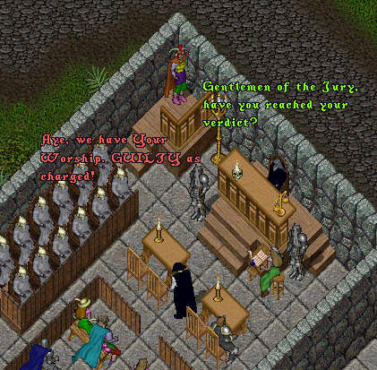
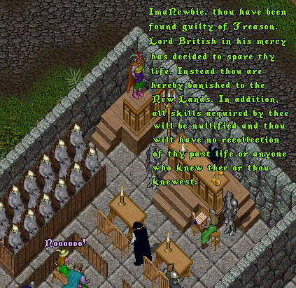
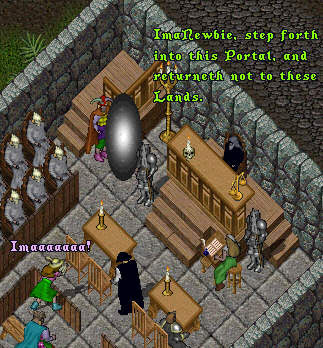
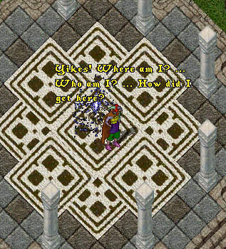
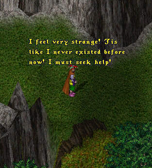
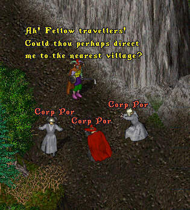
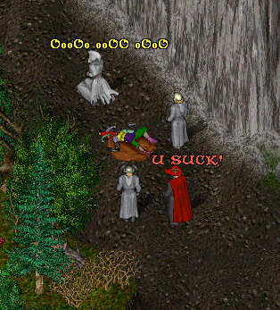

Episode 73: The Conspiracy (The Verdict) - Well the evidence has been heard and the jury has deliberated. As we begin this episode, the judge has called the jury back into the courtroom to announce the verdict.



Devastated by the verdict, but nevertheless a believer in the
rule of law, ImaNewbie proceeds to the portal as ordered.
Irma cries out as her man disappears once again. He emerges
in a strange outdoor temple.

ImaNewbie begins walking, not knowing who he is, where he is
or how he got there. His memory has been wiped clean.

Having decided he must try and discover his identity, ImaNewbie proceeds down the road to where he meets three individuals and asks for directions.

